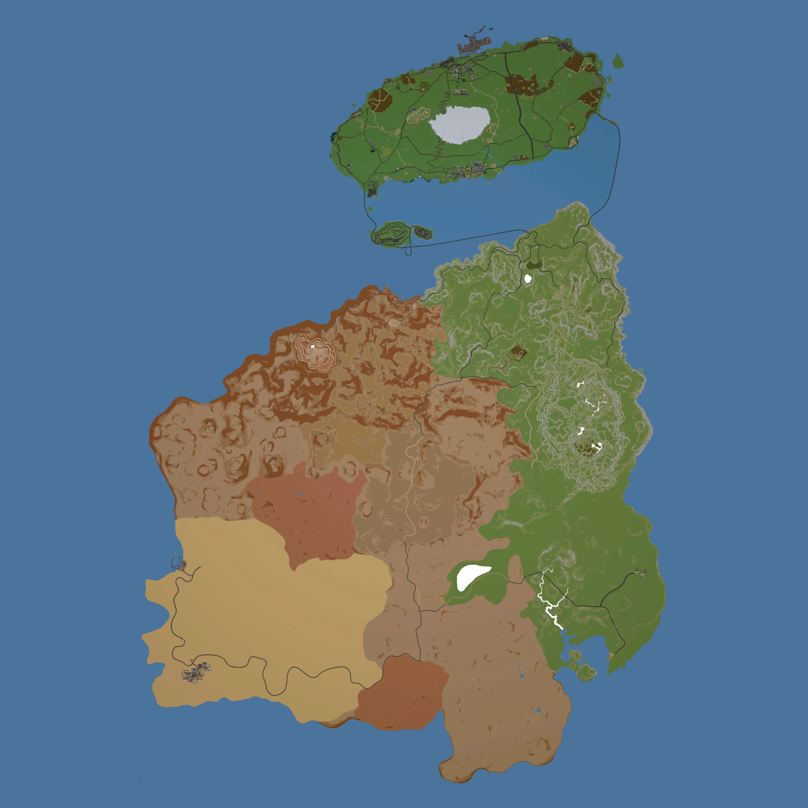

Scroll mouse to zoom and unlock panning

How to Use
- In MotorTown: Open your event and export the route.
- On this site: Use
Ctrl+Vto paste into the Input window. - Configure: Check/uncheck "Reverse?" to swap start with finish.
- Resize: Use the dropdown to enlarge gates if they are too small for large events.
- Finalize: Press Process, then Copy Output.
- Import: Import the code back into the event in game and enjoy!